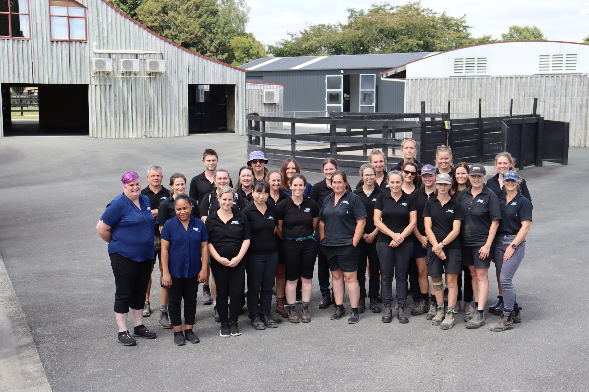

Join a specialist equine team at the forefront of veterinary medicine in New Zealand — and build your career in one of the industry's most respected practices.
Why MVS Equine
MVS Equine is one of New Zealand's premier equine veterinary practices — operating a purpose-built hospital, an advanced reproduction unit, and a busy ambulatory service from the heart of the Waikato.
Our team works across the full spectrum of equine medicine: from routine preventative care in the field, to complex colic surgery, advanced diagnostics including nuclear scintigraphy, and specialist reproduction services through MVS EquiBreed.
Working here means real clinical variety, mentorship from board-certified specialists, and the opportunity to develop your skills at pace in a busy, high-standard environment.
Get in Touch
Internship Programme
Our 12-month fixed-term equine internship is designed for new graduate veterinarians seeking intensive, specialist-level clinical training in equine medicine and surgery.
Interns rotate across all three service areas — ambulatory field work, hospital medicine and surgery, and MVS EquiBreed reproduction — gaining broad exposure to the full scope of equine veterinary practice.
You will work alongside experienced equine veterinarians and specialist clinicians, with structured mentorship and regular case discussions designed to accelerate your development. The Waikato region offers an exceptional clinical caseload — from thoroughbred racing to warmblood sport horses and everything in between.
Apply Now
Applications and enquiries for the internship programme should be directed to Andrea Ritmeester. Andrea manages recruitment and will be happy to answer any questions about the programme and what to expect.
Send an ApplicationUnsolicited Applications
We welcome speculative applications from experienced equine veterinarians and vet nurses who are interested in joining our team. Send your CV and covering letter and we'll keep your details on file.
Send a Speculative Application